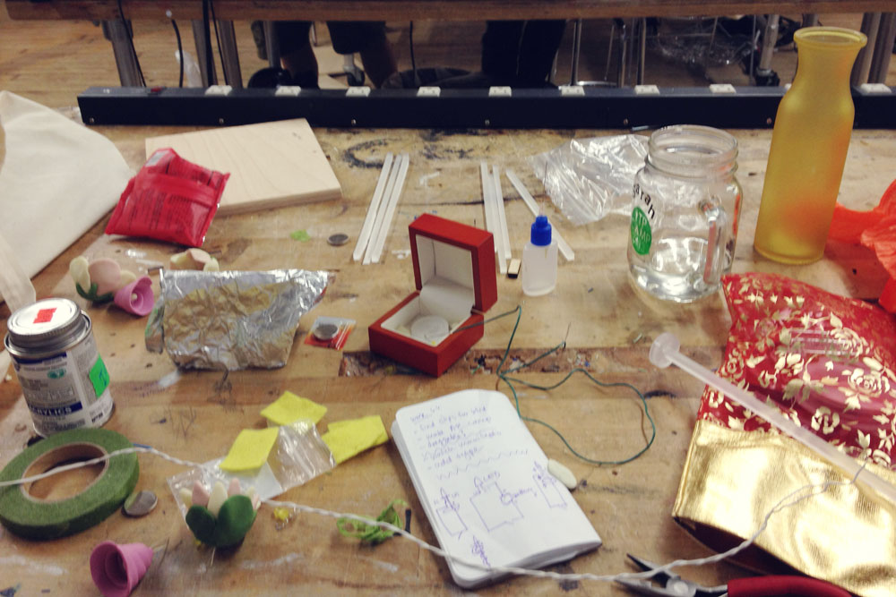
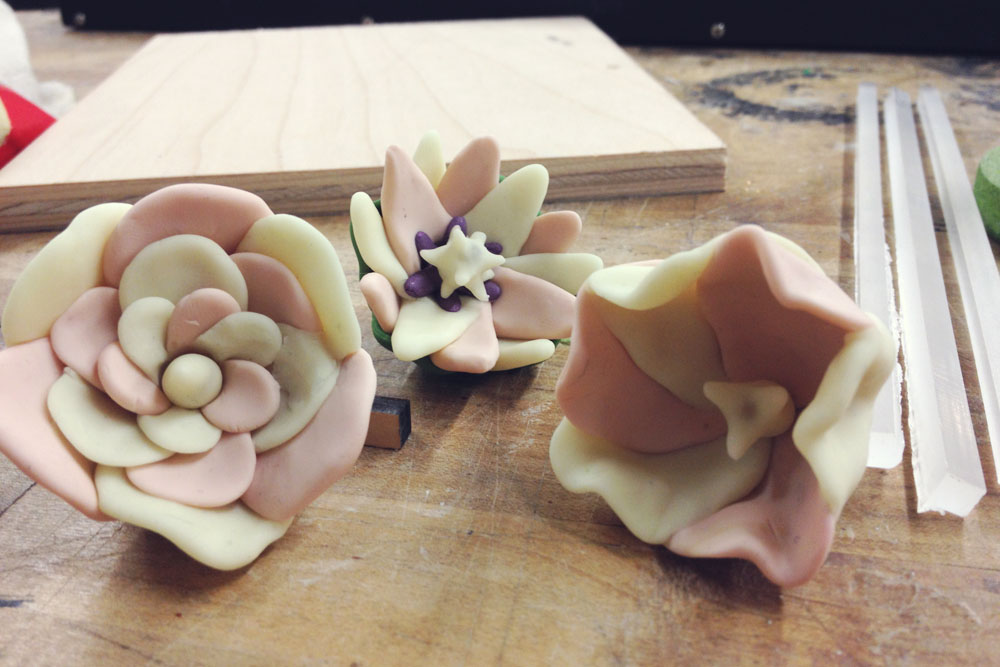
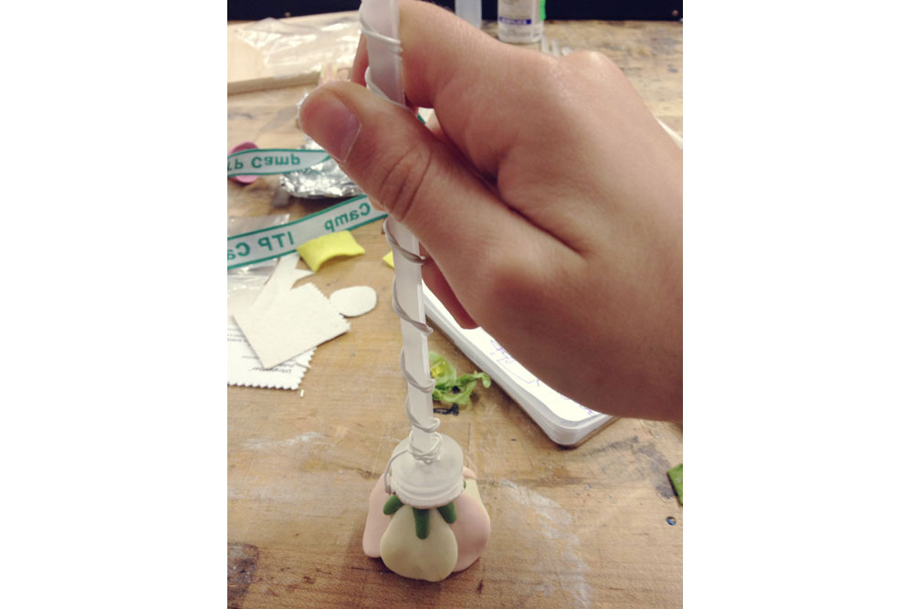
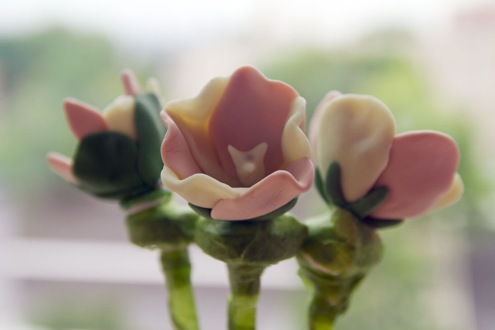

Clay flowers that each contain a super bright LED within the stamen. When placed inside the special conductive vase, a simple circuit is completed and the flowers bloom.
Designed by Sarah Riazati. Flowers crafted by Maia Stern
Built at ITP Camp in June 2013
I first discovered NYU's ITP graduate program in early 2012, and in June of that year I went to their ITP Camp, once dubbed "summer camp for grown up creative geeks" by Gizmodo. I had such a great time and learned so much that I couldn't stay away in June 2013.
As a "sophomore", I had some specific goals this time around. One was to produce a concrete, tangible final project. It had to be simple enough to complete a prototype in time for the end-of-camp show, but still interesting enough that I wouldn't be embarrassed to sit it next to everyone else's amazing work.
I spent the first few weeks learning about everything from projection mapping to Arduino sensors to Python to Max/MSP to aerial mapping. Riding the train home each night, I scribbled tons of half-baked ideas into my notebook. But most of them were much too complicated to complete in my short timeline.

Another thing that happens every June is Father's Day. My dad commutes from Atlanta to New York City for work each week, and in NYC he lives in a very sparsely-furnished apartment. For Father's Day, I wanted to give him some fake flowers and a vase to add some color and "life" to his living space. I spent the Sunday before running around the village looking for silk flowers. That same Sunday, I went to a camp session on Soft Circuits led by Jen Liu.
In that session, all my ideas converged into the simplest one yet, LED flowers that light up only when placed inside a special conductive vase. With Jen's and other campers' help, I sketched a very simple circuit to make this possible. I also learned from Jen that you can bake LED lights into Sculpey clay to create illuminating sculptures. My video partner-in-crime Maia Stern has a second talent as a sculpey-tor, so I asked her to design the flowers out of the clay. I used the laser cutter to cut stems and battery holders out of scrap pieces of acrylic, and I lined a glass vase with aluminum foil.


On the day of the show I took a personal day from work so I could assemble all the pieces. My goal was to create three functional flowers. Of course, assembly took much longer than intended, and it was a challenge to keep the circuit attached and connected. In the end, I learned how to solder so I could just glue everything together. I finished the third flower just in time for the final bell ring, and I was very happy to have three functional prototypes in time for the show.
